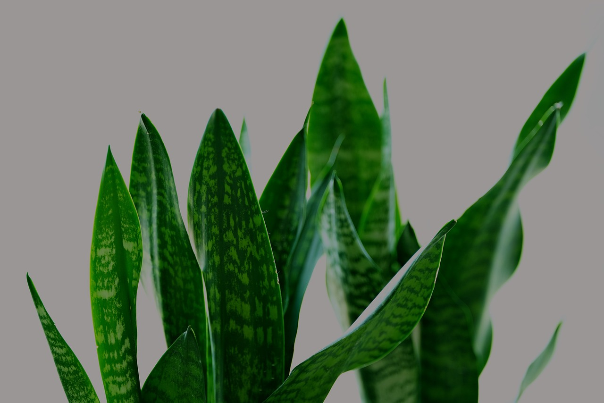
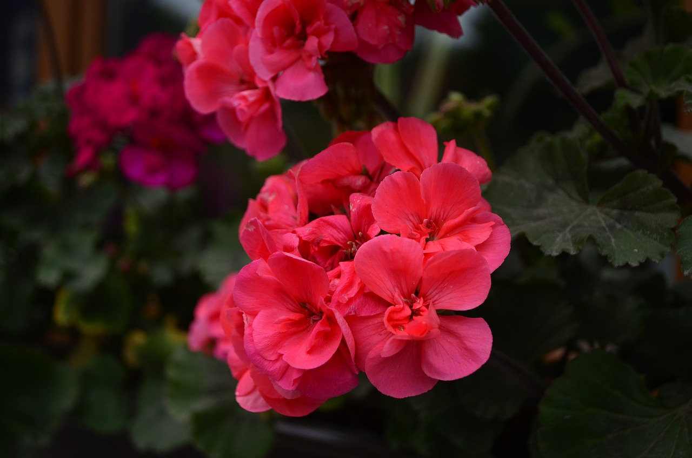
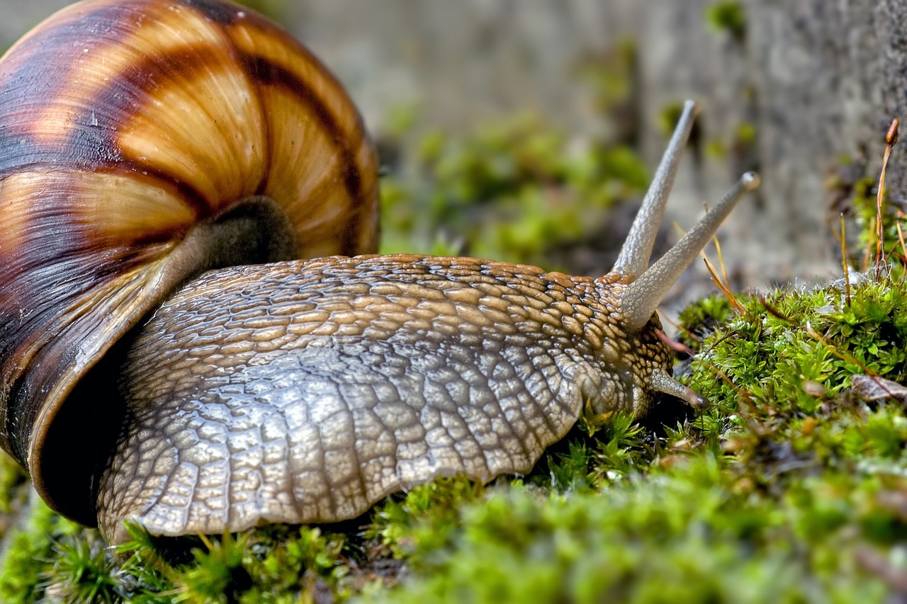
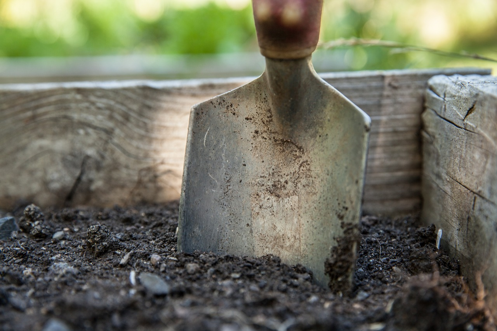

<<<<<<< HEAD
Nosotras
Contacto
Dejanos tu tip
RePlantear
Para plasmar tus proyectos vegetales en tierra firme
¿En qué te podemos ayudar?
=======
Inicio
Contacto
Nosotras
Tips comunidad
>>>>>>> origin/feature/josefina
Para plasmar tus proyectos vegetales en tierra firme

¿En qué te podemos ayudar?
<<<<<<< HEAD
La luz, el suelo, el agua, los bichos y muchas otras cosas pueden ser un obstáculo en la salud de tu planta.
Vení a conocer otras grandes ayudas para la salud de tus plantitas
Identificador de plantas
Houston, tenemos un problema?
Links útiles
=======

Utilizá nuestro buscador para saber de tu planta y sus ancestros: cuanto más sabés, mejor!

La luz, el suelo, el agua, los bichos y muchas otras cosas pueden ser un obstáculo en la salud de tu planta.

Vení a conocer otras grandes ayudas para la salud de tus plantitas.